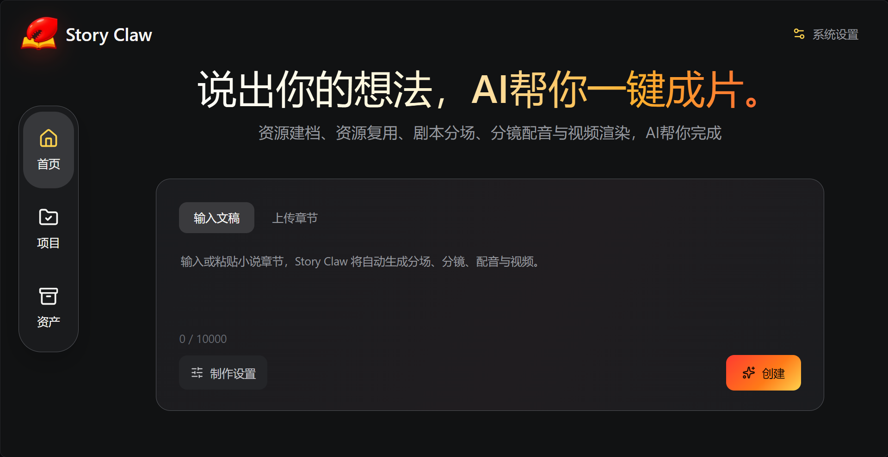
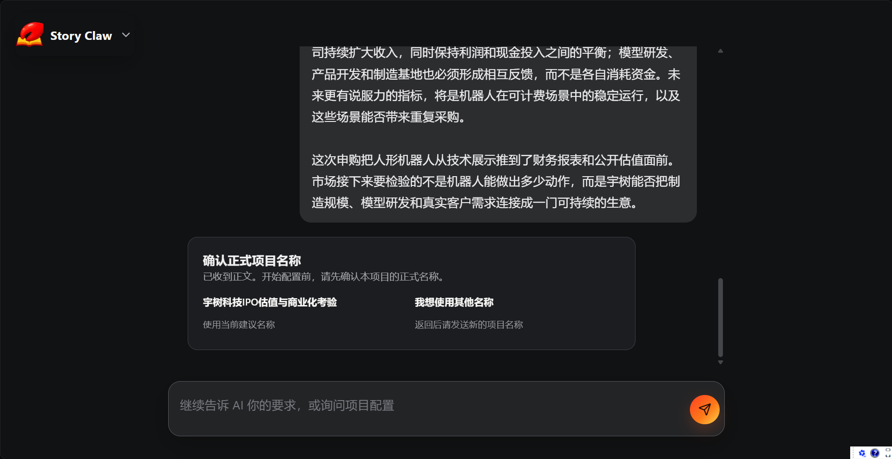
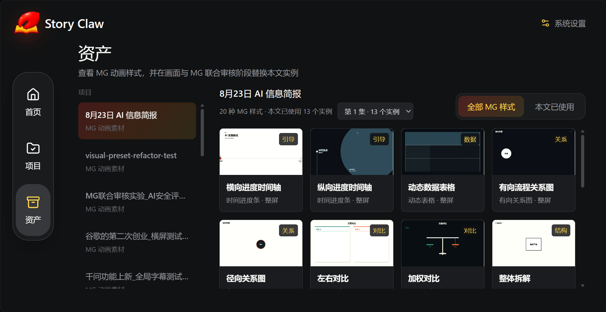
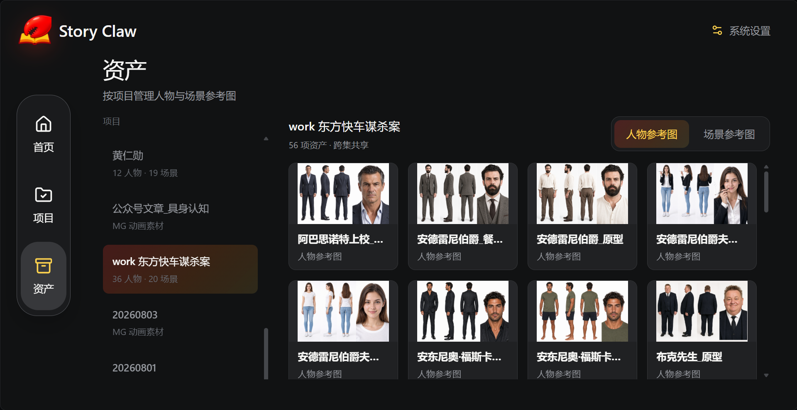

01 / AI HOT NEWSAI 热点新闻打开原视频 ↗
把内容，做成能播放的成片。

从内容到成片，完整流程
- 01原文清理保留叙事骨架
- 02画面预设逐句标注镜头
- 03资源建档角色、场景、音色
- 04分镜制作逐场景设计画面
- 05渲染合成TTS、音效、视频

ASSET LIBRARY
资产管理


01
MG 动画模板
时间轴、数据表格、关系图和对比样式，按项目直接调用。
02
人物与场景参考
角色原型、造型和场景底图统一归档，制作时随时复用。
03
CodexSkill 插件
把自己的制作流程封装成可复用的插件，继续扩展 Story Claw。
REAL OUTPUT
从输入文字，到
可以直接播放的结果。
以下成片由 Story Claw 全自动生成，未做手动剪辑。点击播放。
02 / MURDER ON THE ORIENT EXPRESS《东方快车谋杀案》第 6 集打开原视频 ↗
DOWNLOAD & BUILD
下载放在这里，
源码也放在这里。
普通用户从 Releases 拿安装包，开发者从仓库拿源码。两个入口指向同一个项目，不会再找错地方。
Windows 安装包：等待首个正式 Release 上传
现在就能下载：源码 ZIP ↗
FOR EVERYONE
↗
Windows 桌面端
发布后下载 .exe 安装器，双击即可启动桌面工作台。
FOR DEVELOPERS
↗
源码与命令行
Node.js 18+，克隆仓库后运行 npm install 和 npm start。
RENDER BACKEND
↗
自托管视频渲染
桌面端可以打包，ComfyUI、LTX 模型和 GPU 依赖建议单独配置。
QUICK START
# clone the project
git clone https://github.com/ZC89757/story-claw.git
cd story-claw
npm install
npm startBEFORE YOU DOWNLOAD
先把几个关键问题说清楚。
GitHub 的“Code”按钮和“Releases”有什么区别？+
“Code”下载的是源码，适合开发者；“Releases”放编译好的 .exe、.zip 和版本说明，适合普通用户。Story Claw 的网页下载按钮会直接带你去 Releases。
能不能把所有依赖都塞进一个 Windows 安装包？+
桌面界面、Node 运行时和项目代码可以打包。ComfyUI、LTX 模型、Python 环境和 GPU 驱动体积大且与硬件强相关，更适合安装器提供检测与配置向导，而不是强行塞进安装包。
正式发布时，应该上传哪些文件？+
建议每个版本上传 StoryClaw-Setup.exe（安装版）、StoryClaw-Portable.zip（便携版）和 SHA256SUMS.txt。网页只需要固定指向“Latest release”，以后更新版本无需改页面。